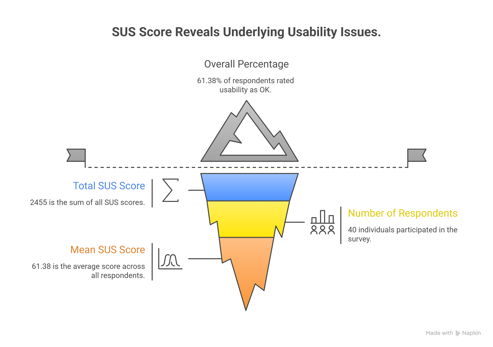
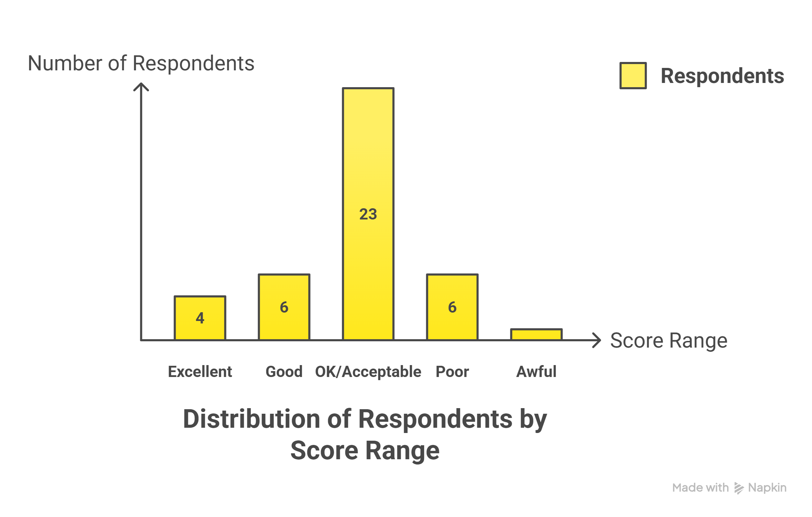
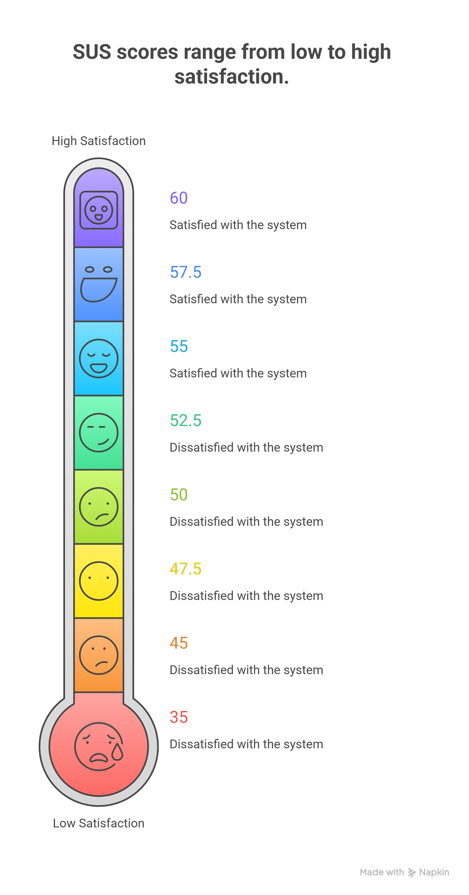
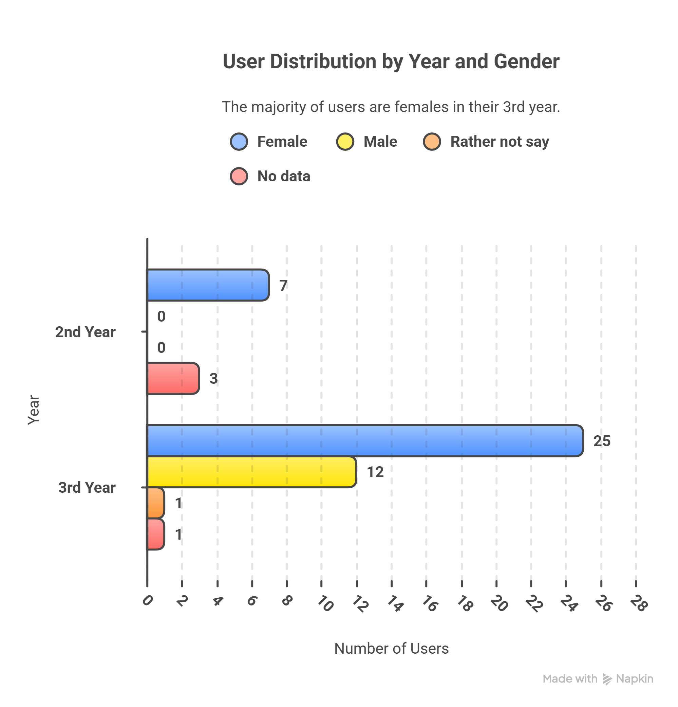
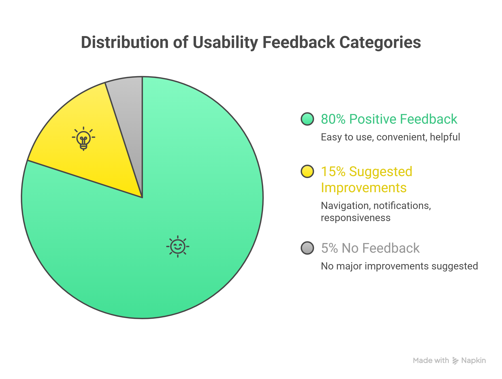
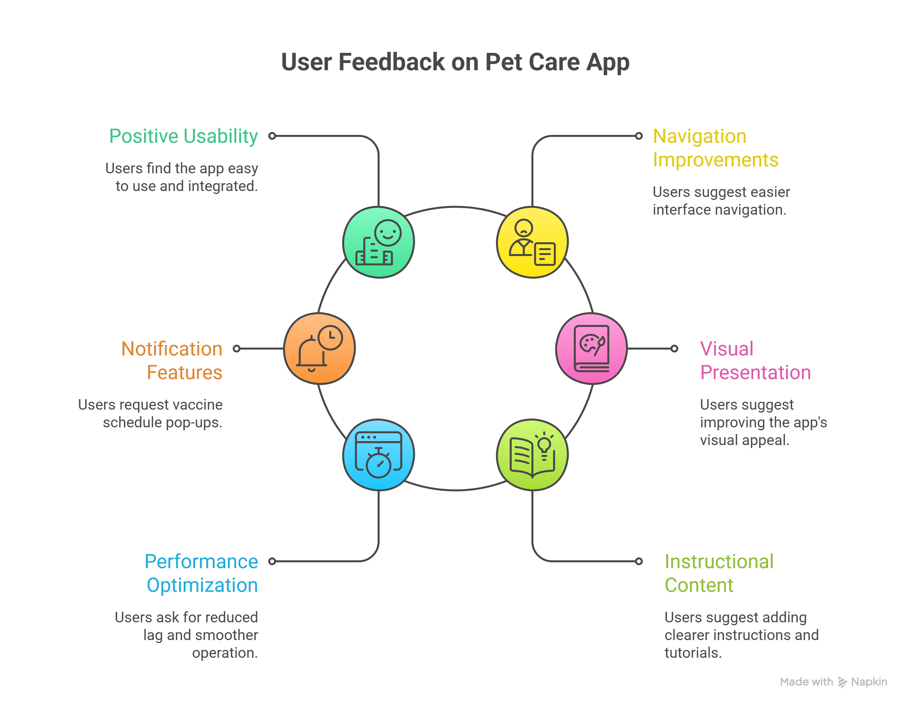

This page presents the findings, observations, and usability issues identified during the evaluation process, along with discussions of participant feedback and system performance.

The system achieved an overall SUS score of 61.38%, which is interpreted as “OK” or “Marginally Acceptable” usability. This suggests that users were generally able to use the system effectively, although several usability improvements are still needed to increase user satisfaction and improve the overall experience.

This graph presents the distribution of respondents according to their System Usability Scale (SUS) score ranges, showing that most participants rated PawTrack within the acceptable usability range, while fewer respondents reported extremely high or low satisfaction levels.

This visual illustrates the interpretation of the SUS scores obtained during usability testing, categorizing respondent satisfaction levels from low to high and indicating the overall perceived usability of the PawTrack system.

The graph presents the demographic distribution of respondents based on year level and gender who participated in the usability testing of the PawTrack: Pet Care & Vet Booking App. The results show that the majority of respondents were female students from the 3rd year level, followed by male respondents from the same year. A smaller number of participants came from the 2nd year level. This distribution indicates that most of the feedback and usability evaluation results were gathered from active technology users within the target student population.

The pie chart summarizes the overall feedback gathered from respondents regarding the usability of the prototype. Most participants provided positive feedback, describing the application as easy to use, convenient, and helpful for managing pet healthcare activities. A smaller percentage of respondents suggested possible improvements related to navigation, notifications, and responsiveness, while very few participants did not provide additional feedback. Overall, the results indicate that users generally had a positive experience while interacting with the prototype.

The diagram highlights the common feedback and suggestions gathered from respondents during the usability testing of the PawTrack prototype. Most users expressed positive usability experiences and found the system understandable and easy to navigate. Some respondents recommended improvements related to navigation flow, visual presentation, and instructional content to further enhance the user experience. Other suggestions included adding notification features for vaccine schedules and improving system responsiveness for smoother interaction. These findings helped identify potential enhancements that may be considered in future versions of the application.
Participants experienced minor difficulties locating certain features and moving between sections of the application.
Some users suggested improving the interface aesthetics through more consistent layouts, spacing, and visual hierarchy.
A few participants reported occasional lag or slower transitions while navigating the system.
Users recommended adding more visible reminders and alerts for vaccination schedules and appointments.
The usability testing results showed that most participants found the PawTrack application easy to use and generally effective for managing pet-related information, such as vaccination records and veterinary appointments. Participants were able to complete the assigned tasks with minimal assistance, indicating that the system's core functions were understandable and accessible to users.
Despite the positive feedback, several participants identified areas that could be improved to enhance the overall user experience. Suggestions included improving navigation clarity, refining the visual presentation of the interface, adding clearer reminders and notifications, and optimizing system responsiveness to provide smoother interactions within the application.
Simplify navigation and improve menu organization to make important features easier to locate.
Optimize loading times and transitions to provide smoother interactions for users.
Implement more noticeable notifications for upcoming vaccinations and appointments.
Improve spacing, typography, and interface consistency to create a more polished experience.
Enhance the application's navigation system by making menus and important features easier to locate while adding clearer instructions and guidance to help users complete tasks more efficiently and confidently.
Improve the visual consistency of the interface through better spacing, layout, and design elements while optimizing system responsiveness and adding clearer notifications for appointments and vaccination reminders.